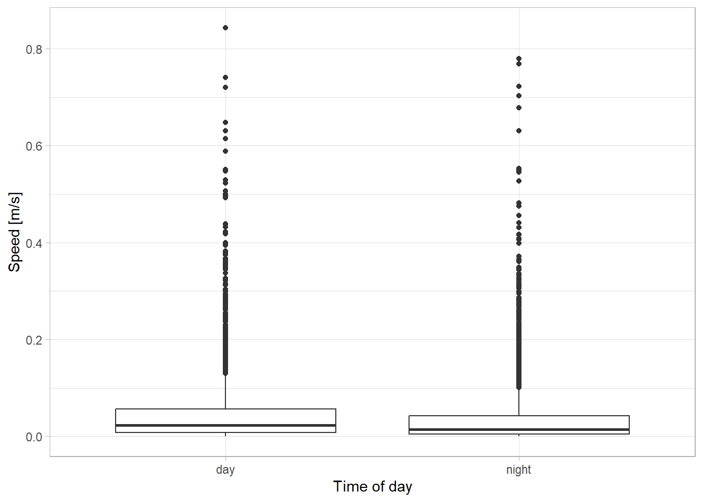

library(sf)
library(amt)
library(tidyverse)
library(lubridate)Create tracks
Introduction
Objectives:
- Create minimum convex polygons for individual caribou
- Calculate movement rates
Read caribou locations (csv file)
We first read the caribou location data as a csv file. If we use the read.csv function we would have to convert the timestamp field to datetime format (see commented lines below). Conversely, the read_csv function automatically detects the timestamp field. We next modify the field names to match the column names expected by the amt package.
#gps <- read.csv('data/yt/gps.csv') |> mutate(timestamp=as.POSIXct(timestamp))
#gps <- read.csv('data/yt/gps.csv') |> mutate(timestamp=ymd_hms(timestamp, tz="GMT"))
gps <- read_csv('../data/yt/gps.csv') |>
rename(t_=timestamp,
x_=longitude,
y_=latitude) |>
mutate(id=paste0('C',ID),
timestamp=NULL, ID=NULL)Rows: 90864 Columns: 5
── Column specification ────────────────────────────────────────────────────────
Delimiter: ","
chr (1): season
dbl (3): longitude, latitude, ID
dttm (1): timestamp
ℹ Use `spec()` to retrieve the full column specification for this data.
ℹ Specify the column types or set `show_col_types = FALSE` to quiet this message.glimpse(gps)Rows: 90,864
Columns: 5
$ t_ <dttm> 2020-11-06 19:10:39, 2020-11-07 01:07:00, 2020-11-07 07:05:54,…
$ x_ <dbl> -129.2876, -129.3327, -129.3022, -129.3021, -129.3146, -129.338…
$ y_ <dbl> 60.24530, 60.19127, 60.17469, 60.17254, 60.14960, 60.14822, 60.…
$ season <chr> "earlywinter", "earlywinter", "earlywinter", "earlywinter", "ea…
$ id <chr> "C43163", "C43163", "C43163", "C43163", "C43163", "C43163", "C4…Make tracks
Read the data set data/elephants.csv (note file paths always start globally). Create a track using, make sure that you set the CRS to 4326. Ensure that the timezone is “GMT”. Then, transform the track to a projected UTM CRS. Here we the Yukon Albers projection (https://epsg.io/3578).
trk <- make_track(gps, x_, y_, t_, id = id, season=season, crs = 4326) |>
transform_coords(crs_to = 3578)
trk# A tibble: 90,864 × 5
x_ y_ t_ id season
* <dbl> <dbl> <dttm> <chr> <chr>
1 606014. 563800. 2020-11-03 19:19:10 C43161 earlywinter
2 606921. 564631. 2020-11-03 19:19:11 C43147 earlywinter
3 607072. 564647. 2020-11-03 19:19:15 C43146 earlywinter
4 613483. 568035. 2020-11-04 01:18:15 C43144 earlywinter
5 614729. 567940. 2020-11-04 01:18:22 C43159 earlywinter
6 614729. 567937. 2020-11-04 01:18:37 C43141 earlywinter
7 605307. 565229. 2020-11-04 01:18:38 C43158 earlywinter
8 608083. 564296. 2020-11-04 01:18:39 C43164 earlywinter
9 614007. 569526. 2020-11-04 01:18:40 C43147 earlywinter
10 614018. 569523. 2020-11-04 01:19:24 C43146 earlywinter
# ℹ 90,854 more rowsSummarize sampling rate for one caribou for one year
Filter only for the first individual "C43140". Only use data for the year 2020. What is is the sampling rate?
trk1 <- trk |> filter(id == "C43140", year(t_) > 2000)
from_to(trk)[1] "2020-11-03 19:19:10 UTC" "2024-03-14 21:17:51 UTC"from_to(trk1)[1] "2020-11-05 01:14:38 UTC" "2024-03-13 09:23:38 UTC"summarize_sampling_rate(trk1)# A tibble: 1 × 9
min q1 median mean q3 max sd n unit
<dbl> <dbl> <dbl> <dbl> <dbl> <dbl> <dbl> <int> <chr>
1 5.94 5.98 5.98 6.01 5.98 29.9 0.505 4890 hour Summarize sampling rates for all (25) caribou for all years
print(summarize_sampling_rate_many(trk, cols='id'), n=25)# A tibble: 25 × 10
id min q1 median mean q3 max sd n unit
* <chr> <dbl> <dbl> <dbl> <dbl> <dbl> <dbl> <dbl> <int> <chr>
1 C43161 0.474 5.98 5.98 7.14 5.99 1173. 27.9 1759 hour
2 C43147 5.94 5.98 5.98 6.01 5.98 12.0 0.389 2126 hour
3 C43146 5.94 5.98 5.98 6.01 5.98 29.9 0.505 4898 hour
4 C43144 5.94 5.98 5.98 6.00 5.98 12.0 0.283 4908 hour
5 C43159 5.94 5.98 5.98 6.00 5.98 12.0 0.351 4904 hour
6 C43141 5.94 5.98 5.98 6.01 5.98 29.9 0.573 4901 hour
7 C43158 5.94 5.98 5.98 6.00 5.98 12.0 0.356 2259 hour
8 C43164 5.94 5.98 5.98 6.01 5.98 29.9 0.483 4899 hour
9 C43150 5.94 5.98 5.98 6.06 5.99 29.9 1.04 693 hour
10 C43154 5.94 5.98 5.98 6.00 5.98 29.9 0.435 4902 hour
11 C43145 5.94 5.98 5.98 6.00 5.98 29.9 0.418 4904 hour
12 C43143 5.94 5.98 5.98 5.99 5.98 12.0 0.241 4910 hour
13 C43140 5.94 5.98 5.98 6.01 5.98 29.9 0.505 4890 hour
14 C43155 5.94 5.98 5.98 6.06 5.98 29.9 0.992 976 hour
15 C43156 5.95 5.98 5.98 6.05 5.98 29.9 1.17 445 hour
16 C43160 5.94 5.98 5.98 6.01 5.98 29.9 0.483 4895 hour
17 C43152 5.94 5.98 5.98 6.00 5.98 12.0 0.270 4907 hour
18 C43148 5.95 5.98 5.98 6.01 5.98 29.9 0.554 2562 hour
19 C43151 5.94 5.98 5.98 6.02 5.99 12.0 0.484 1823 hour
20 C43142 5.94 5.98 5.98 6.03 5.98 126. 1.76 4874 hour
21 C43149 5.94 5.98 5.98 6.02 5.99 29.9 0.621 2496 hour
22 C43162 5.94 5.98 5.98 6.03 5.98 29.9 0.704 2230 hour
23 C43153 5.94 5.98 5.98 6.00 5.98 53.9 0.720 4896 hour
24 C43157 5.94 5.98 5.98 6.01 5.98 29.9 0.468 4890 hour
25 C43163 5.94 5.98 5.98 6.00 5.98 12 0.331 4892 hour Calculate speed
Calculate the speed (i.e., the distance per unit time) for each relocation, and the time of the day for each relocation.
trk2 <- trk1 %>% mutate(speed = speed(.)) %>%
time_of_day()
trk2# A tibble: 4,891 × 7
x_ y_ t_ id season speed tod_
<dbl> <dbl> <dttm> <chr> <chr> <dbl> <fct>
1 601985. 561407. 2020-11-05 01:14:38 C43140 earlywinter 0.0312 night
2 602336. 561980. 2020-11-05 07:13:21 C43140 earlywinter 0.000561 night
3 602329. 561990. 2020-11-05 13:12:38 C43140 earlywinter 0.137 night
4 604716. 563710. 2020-11-05 19:11:12 C43140 earlywinter 0.0509 day
5 605802. 563872. 2020-11-06 01:10:35 C43140 earlywinter 0.000290 night
6 605805. 563877. 2020-11-06 07:09:37 C43140 earlywinter 0.00687 night
7 605938. 563942. 2020-11-06 13:08:38 C43140 earlywinter 0.186 night
8 609936. 563955. 2020-11-06 19:07:38 C43140 earlywinter 0.0457 day
9 608954. 563884. 2020-11-07 01:06:35 C43140 earlywinter 0.00227 night
10 609000. 563868. 2020-11-07 07:05:29 C43140 earlywinter 0.00215 night
# ℹ 4,881 more rowsSpeed and time of day
Does speed differ between time of day?
theme_set(theme_light())
ggplot(trk2, aes(tod_, speed)) +
geom_boxplot() +
labs(x = "Time of day", y = "Speed [m/s]")Warning: Removed 1 row containing non-finite outside the scale range
(`stat_boxplot()`).
Add a new column to the data set that indicates the months of the year when each relocation was taken. Does the association between speed and temperature remains the same for each month? Explore this graphically and calculate monthly means and median for speeds.
trk3 <- mutate(trk2, month = month(t_, label = TRUE))
trk3 %>% group_by(month, tod_) %>%
summarise(m = mean(speed), sd = sd(speed))`summarise()` has grouped output by 'month'. You can override using the
`.groups` argument.# A tibble: 24 × 4
# Groups: month [12]
month tod_ m sd
<ord> <fct> <dbl> <dbl>
1 Jan day 0.0661 0.0972
2 Jan night 0.0309 0.0591
3 Feb day 0.0540 0.0920
4 Feb night 0.0359 0.0732
5 Mar day 0.0348 0.0587
6 Mar night NA NA
7 Apr day 0.0354 0.0532
8 Apr night 0.0156 0.0200
9 May day 0.0540 0.100
10 May night 0.0423 0.102
# ℹ 14 more rowsCreate tracks with equal sampling rates (bursts)
If there are gaps and/or different sampling rates, interpolation with continuous time movement models may be an option (Jonsen et al. 2023. aniMotum, an R package for animal movement data)
print(track_resample(trk))# A tibble: 4,925 × 6
x_ y_ t_ id season burst_
* <dbl> <dbl> <dttm> <chr> <chr> <dbl>
1 606014. 563800. 2020-11-03 19:19:10 C43161 earlywinter 1
2 613483. 568035. 2020-11-04 01:18:15 C43144 earlywinter 2
3 608086. 564280. 2020-11-04 07:17:15 C43164 earlywinter 3
4 615099. 571114. 2020-11-04 13:16:27 C43159 earlywinter 4
5 615492. 575275. 2020-11-04 19:15:10 C43146 earlywinter 5
6 619801. 579694. 2020-11-05 01:14:17 C43144 earlywinter 6
7 629095. 585540. 2020-11-05 07:13:11 C43146 earlywinter 7
8 672763. 633945. 2020-11-05 13:12:21 C43156 earlywinter 8
9 604716. 563710. 2020-11-05 19:11:12 C43140 earlywinter 9
10 633605. 588892. 2020-11-06 01:10:15 C43159 earlywinter 10
# ℹ 4,915 more rows